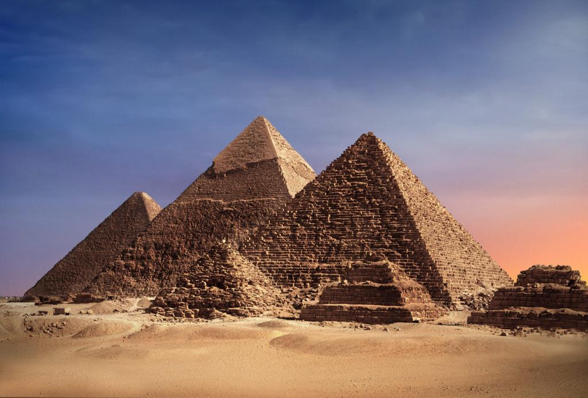
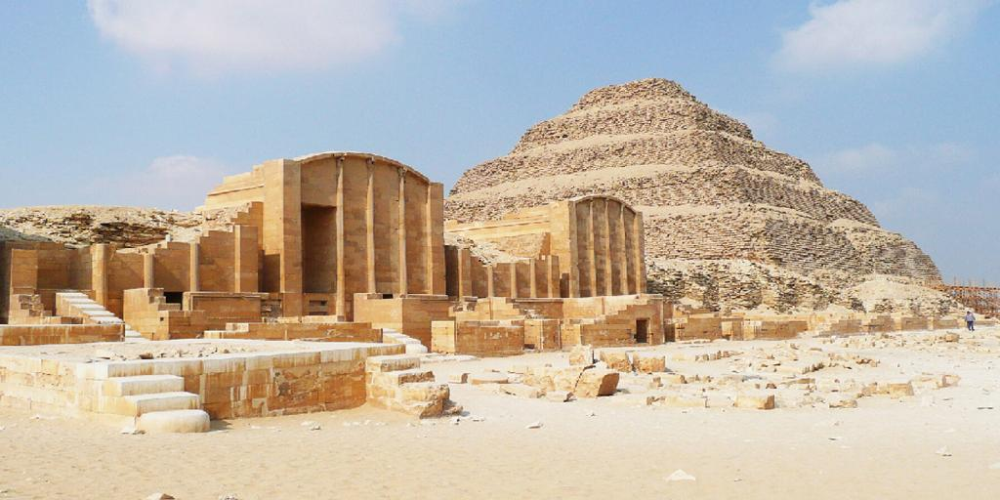
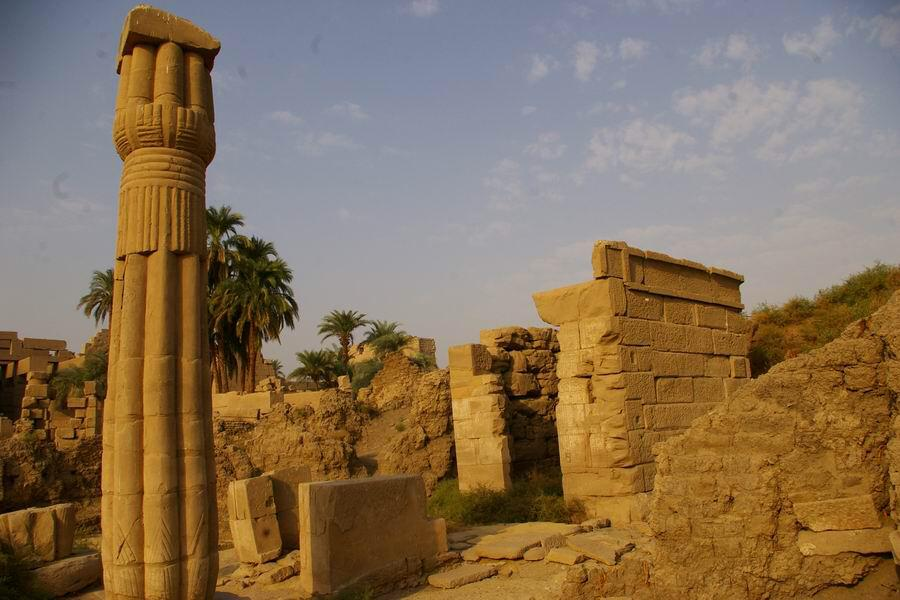

Pyramides de Gizeh
Les pyramides de Gizeh sont les plus célèbres pyramides d'Égypte. Elles sont situées près du Caire et sont composées de trois pyramides principales : Khéops, Khéphren et Mykérinos. La plus grande, Khéops, est considérée comme l'une des sept merveilles du monde antique le pharaon Khéops a lancé le premier projet de pyramide de Gizeh, vers 2550 avant J.-C. Sa "Grande pyramide" est la plus large et haute du site et s'élève à 147 mètres au-dessus du niveau du sol. La construction de cette pyramide a été permise par le très long règne de soixante-trois ans du pharaon Khéops.. Le fils de Khéops, le pharaon Khéphren, a construit la deuxième pyramide à Gizeh, vers 2520 avant J.-C. Son ouvrage comprenait également le Sphinx, le mystérieux monument en calcaire avec un corps de lion (lui offrant une force surhumaine) et une tête de pharaon (lui offrant une intelligence supérieure). Le Grand Sphinx a pour rôle d'être le gardien de l'ensemble des pyramides du site. la pyramide de Mykérinosn,Construite par le pharaon Mykérinos vers 2490 avant J.-C., la troisième des Pyramides de Gizeh est considérablement plus petite que les deux premières. À titre de comparaison, la pyramide de Mykérinos ne représente qu'un dixième du volume de la grande pyramide de Khéops. La pyramide est réputée comme plus petite que les deux autres à cause du règne beaucoup moins long de son souverain constructeur (selon certaines trouvailles archéologiques, Mykérinos n'aurait régné que pendant dix-huit ans).
Pyramides de Saqqara
Les pyramides de Saqqara sont situées près de Memphis, la capitale de l'Égypte ancienne. La pyramide la plus célèbre de Saqqara est la pyramide à degrés de Djoser, construite vers 2630 avant J.C.
Pyramides de Dahchour
Les pyramides de Dahchour sont situées à environ 40 kilomètres au sud du Caire. La pyramide rhomboïdale de Snefrou est la plus célèbre de Dahchour.
